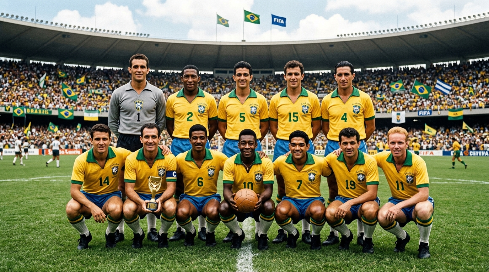

UMA HISTÓRIA QUE ATRAVESSA GERAÇÕES
Além das Quatro Linhas
As lendas que fizeram do Brasil o país do futebol.
Explore nossa história →A PAIXÃO QUE ATRAVESSA GERAÇÕES
Muito além de 90 minutos.
O futebol brasileiro é feito de histórias que ultrapassam as quatro linhas. De gerações inesquecíveis a conquistas que marcaram o mundo, cada craque deixou sua marca na nossa identidade.
Aqui, você vai reviver os momentos que transformaram o Brasil no país do futebol e conhecer os clubes que ajudaram a construir esse legado.
5
Títulos mundiais
1914
Início da Seleção
EXPLORE NOSSA HISTÓRIA
Escolha sua jornada.

AS CAMISAS QUE MARCARAM ÉPOCA
Muito além de um uniforme.
Cada camisa carrega uma conquista, uma geração e uma história inesquecível. Reviva os mantos que vestiram os maiores ídolos da Seleção Brasileira!!
Conheça as camisas →